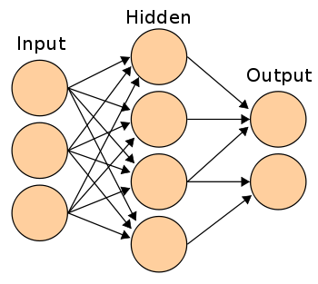

Machine Learning
Human learning done by a computer
Hit S for notes
Table of Contents
-
Introduction to ML
- Definition
- Purpose
- Examples
-
Types of ML
- Supervised Learning
- Unsupervised Learning
- Semi-supervised Learning
-
Neural Network
- Basic Introduction
- Demonstration
- Conclusion
Introduction
What is Machine Learning?
A: A lot of things!
“[Machine Learning is the] field of study that gives computers the ability to learn without being explicitly programmed.”
- Arthur Samuel
“A computer program is said to learn from experience E with respect to some task T and some performance measure P, if its performance on T, as measured by P, improves with experience E.”
- Tom Mitchell, Carnegie Mellon University
Purpose
Predictions
“ML solves problems that cannot be solved by numerical means alone.”
Examples
Is this cancer?How much is that house worth?
Will this rocket blow up on lift off?
Will I like that movie? - Netflix movie recommendation
Who is this? - Facebook facial recognition
What did you say?
How do you fly this thing?
Types of Machine Learning
Supervised
Unsupervised
Semi-supervised
Supervised Machine Learning
The program is 'trained' on a pre-defined set of 'training examples', which then facilitate its ability to reach an accurate conclusion when given new data.
It is called supervised learning because the process of an algorithm learning from the training dataset can be thought of as a teacher supervising the learning process. We know the correct answers, the algorithm iteratively makes predictions on the training data and is corrected by the teacher. Learning stops when the algorithm achieves an acceptable level of performance.
In the majority of supervised learning applications, the ultimate goal is to develop a finely tuned predictor function h(x) (sometimes called the 'hypothesis'). 'Learning' consists of using sophisticated mathematical algorithms to optimize this function so that, given input data x about a certain domain (say, square footage of a house), it will accurately predict some interesting value h(x) (say, market price for said house).
What would our prediction model look like?
h(x) = K + V*x
K & V are constants, X is # sq. feet
Goal is to find best values for K & V
How do we train this?
“The goal of ML is never to make 'perfect' guesses, because ML deals in domains where there is no such thing. The goal is to make guesses that are good enough to be useful.”
ML Relies on Statistics
Not enough training data = Bad
Lack of variety in training data = Bad
Ex.: National average salary.
Many modern machine learning problems take thousands or even millions of dimensions of data to build predictions using hundreds of coefficients. Predicting how an organism’s genome will be expressed, or what the climate will be like in fifty years, are examples of such complex problems.
Supervised ML can be divided into two subcategories:
Regression problems:
Problems where the value being predicted falls somewhere on a continuous spectrum. These systems help us with questions of 'How much?' or 'How many?'.Classification problems:
Problems where we seek a yes-or-no prediction, such as 'Is this tumor cancerous?', 'Does this cookie meet our quality standards?', 'Is Jonathon going to be "sick" today?' and so on.
Regression
Linear
Polynomial
I will only be covering Linear Regression
Linear Regression
Linear regression is a linear model, e.g. a model that assumes a linear relationship between the input variables (x) and the single output variable (y). More specifically, that y can be calculated from a linear combination of the input variables (x).
Single input variable (x) = simple linear regression
Multiple input variables = multiple linear regression
Different techniques can be used to prepare or train the linear regression equation from data, the most common of which is called Ordinary Least Squares. It is common to therefore refer to a model prepared this way as Ordinary Least Squares Linear Regression or just Least Squares Regression.
1. Simple Linear Regression
With simple linear regression when we have a single input, we can use statistics to estimate the coefficients.
This requires that you calculate statistical properties from the data such as means, standard deviations, correlations and covariance. All of the data must be available to traverse and calculate statistics.
This is fun as an exercise in excel, but not really useful in practice.
2. Ordinary Least Squares
When we have more than one input we can use Ordinary Least Squares to estimate the values of the coefficients.
Most commonly used
The Ordinary Least Squares procedure seeks to minimize the sum of the squared residuals.
This means that given a regression line through the data we calculate the distance from each data point to the regression line, square it, and sum all of the squared errors together. This is the quantity that ordinary least squares seeks to minimize.
This approach treats the data as a matrix and uses linear algebra operations to estimate the optimal values for the coefficients.
It means that all of the data must be available and you must have enough memory to fit the data and perform matrix operations.
It is unusual to implement the Ordinary Least Squares procedure yourself unless as an exercise in linear algebra.
It is more likely that you will call a procedure in a linear algebra library.
This procedure is very fast to calculate.

3. Gradient Descent
When there are one or more inputs you can use a process of optimizing the values of the coefficients by iteratively minimizing the error of the model on your training data.
Most commonly taught
This operation is called Gradient Descent and works by starting with random values for each coefficient. The sum of the squared errors are calculated for each pair of input and output values.
A learning rate is used as a scale factor and the coefficients are updated in the direction towards minimizing the error. The process is repeated until a minimum sum squared error is achieved or no further improvement is possible.
When using this method, you must select a learning rate (alpha) parameter that determines the size of the improvement step to take on each iteration of the procedure.
Gradient descent is often taught using a linear regression model because it is relatively straightforward to understand. In practice, it is useful when you have a very large dataset either in the number of rows or the number of columns that may not fit into memory.
4. Regularization
There are extensions of the training of the linear model called regularization methods.
These seek to both minimize the sum of the squared error of the model on the training data (using ordinary least squares) but also to reduce the complexity of the model (like the number or absolute size of the sum of all coefficients in the model).
Two popular examples of regularization procedures:
Lasso Regression:
Where Ordinary Least Squares is modified to also minimize the absolute sum of the coefficients (called L1 regularization)Ridge Regression:
Where Ordinary Least Squares is modified to also minimize the squared absolute sum of the coefficients (called L2 regularization)
These methods are effective to use when there is collinearity in your input values and ordinary least squares would overfit the training data.
Overfitting
Overfitting refers to a model that models the training data too well.
Overfitting happens when a model learns the detail and noise in the training data to the extent that it negatively impacts the performance on the model on new data.
This means that the noise or random fluctuations in the training data is picked up and learned as concepts by the model.
The problem is that these concepts do not apply to new data and negatively impact the models ability to generalize.
Overfitting is more likely with nonparametric and nonlinear models that have more flexibility when learning a target function.
As such, many nonparametric machine learning algorithms also include parameters or techniques to limit and constrain how much detail the model learns.
For example, decision trees are a nonparametric machine learning algorithm that are very flexible and are subject to overfitting training data.
This problem can be addressed by 'pruning' a tree after it has learned in order to remove some of the detail it has picked up.
Underfitting
Underfitting refers to a model that can neither model the training data nor generalize new data.
An underfit machine learning model is not a suitable model and will be obvious as it will have poor performance on the training data.
Underfitting is often not discussed as it is easy to detect given a good performance metric.
The remedy is to move on and try alternate machine learning algorithms.
Nevertheless, it does provide good contrast to the problem of concept of overfitting.
5 Rules of Thumb When Preparing Data For Linear Regression
1. Linear Assumption
Linear regression assumes that the relationship between your input and output is linear. It does not support anything else.
This may be obvious, but it is good to remember when you have a lot of attributes.
You may need to transform data to make the relationship linear (e.g. log transform for an exponential relationship).
2. Remove Noise
Linear regression assumes that your input and output variables are not noisy.
Consider using data cleaning operations that let you better expose and clarify the signal in your data.
This is most important for the output variable and you want to remove outliers in the output variable (y) if possible.
3. Remove Collinearity
Linear regression will over-fit your data when you have highly correlated input variables.
Consider calculating pairwise correlations for your input data and removing the most correlated.
4. Gaussian Distributions
Linear regression will make more reliable predictions if your input and output variables have a Gaussian distribution.
You may get some benefit using transforms (e.g. log or BoxCox) on you variables to make their distribution more Gaussian looking.
Gaussian Process = Research Topic
5. Rescale Inputs
Linear regression will often make more reliable predictions if you rescale input variables using standardization or normalization.
Classification
Classification is the problem of identifying to which of a set of categories (sub-populations) a new observation belongs, on the basis of a training set of data containing observations (or instances) whose category membership is known.
Classification is an example of pattern recognition.
An algorithm that implements classification is known as a classifier.
Two Types of Classifiers
Binary
Non-Binary
Unsupervised Machine Learning
The program is given a bunch of data and must find patterns and relationships therein.
There are no training examples used in this process.
A good example is identifying close-knit groups of friends in social network data
Unsupervised learning problems can be further grouped into clustering and association problems.
clustering problems:
A clustering problem is where you want to discover the inherent groupings in the data, such as grouping customers by purchasing behavior.association problems:
An association rule learning problem is where you want to discover rules that describe large portions of your data, such as people that buy X also tend to buy Y.
Unsupervised ML Research Topics
Two popular examples of unsupervised ML algorithms are:
- k-means for clustering problems
- Apriori algorithm for association rule learning problems
Semi-supervised Machine Learning
Problems where you have a large amount of input data (X) and only some of the data is labeled (Y) are called semi-supervised learning problems.
A good example is a photo archive where only some of the images are labeled, (e.g. dog, cat, person) and the majority are unlabeled.
Many real world machine learning problems fall into this area. This is because it can be expensive or time-consuming to label data as it may require access to domain experts. Whereas unlabeled data is cheap and easy to collect and store.
What do you do with the unlabeled data?
You can use unsupervised learning techniques to discover and learn the structure in the input variables.
You can also use supervised learning techniques to make best guess predictions for the unlabeled data, feed that data back into the supervised learning algorithm as training data and use the model to make predictions on new unseen data. Ex: % students graduated
Neural Networks
Neural networks are composed of multiple nodes, which imitate biological neurons of the human brain. The neurons are connected by links and they interact with each other. The nodes can take input data and perform simple operations on the data. The result of these operations is passed to other neurons. The output at each node is called its activation or node value.
Each link is associated with weight. Neural networks are capable of learning, which takes place by altering weight values.
A weight is an integer number that controls the signal between the two neurons.
If the network generates a 'good or desired' output, there is no need to adjust the weights. However, if the network generates a 'poor or undesired' output or an error, then the system alters the weights in order to improve subsequent results.
Neural networks can learn via the methods defined earlier and with reinforcement learning
This strategy is built on observation. The neural network makes a decision by observing its environment. If the observation is negative, the network adjusts its weights to be able to make a different required decision the next time.
Perceptron
Single layer neural network
Input is multi-dimensional (i.e. input can be a vector):
input x = ( I1, I2, .., In)
Input nodes (or units) are connected (typically fully) to a node (or multiple nodes) in the next layer. A node in the next layer takes a weighted sum of all its inputs
The output node has a "threshold" t.
Rule: If summed input ≥ t, then it "fires" (output y = 1).
Else (summed input < t) it doesn't fire (output y = 0).
Perceptrons return binary output
Backpropagation
Training algorithm for neural networks
2 steps for backpropogation:
Feed forward the values (input something at the input layer and it travels from input to hidden and from hidden to output layer. The values are "fed forward".)
Calculate the error and propagate it back to the earlier layers
Automotive − Automobile guidance systems.
Military − Weapon orientation and steering, target tracking, object discrimination, facial recognition, signal/image identification.
Electronics − Code sequence prediction, IC chip layout, chip failure analysis, machine vision, voice synthesis.
Financial − Real estate appraisal, loan advisor, mortgage screening, corporate bond rating, portfolio trading program, corporate financial analysis, currency value prediction, document readers, credit application evaluators.
Industrial − Manufacturing process control, product design and analysis, quality inspection systems, welding quality analysis, paper quality prediction, chemical product design analysis, dynamic modeling of chemical process systems, machine maintenance analysis, project bidding, planning, and management.
Medical − Cancer cell analysis, EEG and ECG analysis, prosthetic design, transplant time optimizer.
Speech − Speech recognition, speech classification, text to speech conversion.
Telecommunications − Image and data compression, automated information services, real-time spoken language translation.
Transportation − Truck Brake system diagnosis, vehicle scheduling, routing systems.
Software − Pattern Recognition in facial recognition, optical character recognition, etc.
Time Series Prediction − Predictions on stocks and natural calamities.
Signal Processing − Neural networks can be trained to process an audio signal and filter it appropriately in the hearing aids.
Anomaly Detection − As ANNs are expert at recognizing patterns, they can also be trained to generate an output when something unusual occurs that misfits the pattern.
Neural Network Demonstration
We'll come back to this.
Conclusion
Wake up, it's over
ML @ IWT?
Reports
- Patient Analytics
- And Marketing!
ML > Exago
Special Topic Ideas
Google's TensorFlow
Scikit-learn - provides a range of supervised and unsupervised learning algorithms via a consistent interface in Python.
Real-time analytics - Netflix movie recommendation system, natural language processing
Recurrent Neural Networks
Demonstration Time!?!?!
Export to PDF
Use the 'print-pdf' query string